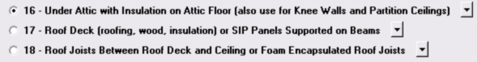

Roof Type Selection (On Roof Material Dialog) |
  
|
Roof Type Selection (On Roof Material Dialog) |
|
On the Roof Material Dialog the following choices are given for the roof type:

Type 16 - Under Attic with Insulation on Attic Floor (also use for Knee Walls and Partition Ceilings)
Many roof/ceiling constructions may appear as being "under attic." However, Type 16 is primarily for conventional roof construction where the roof is framed and decked and has insulation on the attic floor. The attic floor constitutes the framing for the ceiling (usually ceiling joists and drywall) that covers the conditioned room beneath it. This type of roof has an attic which can be sealed or unsealed to ambient air movement and is expected to get very hot and cold as the seasons change. The other situation to select "under attic" is when you want to directly enter a summer temperature difference (STD) and a winter temperature difference (WTD) between the attic and the conditioned space. This method is rarely used, as you have to guess what the STD and WTD values might be, but if the attic has exceptional insulation both on the attic roof and/or floor such that the attic temperatures are not expected to differ much from the conditioned room below, this method can be useful.
Type 17 - Roof Deck (roofing, wood, insulation) or SIP Panels Supported on Beams
Type 17 roofs can be any combination of roof decking, wood sheathing, foam board or other types of insulation directly supported over beams. The roofing material is either supported on multiple beams or a single ridge beam and wall, as with SIP roof panels. Often times these beams are visible to the conditioned space below. Sometimes these beams are not visible if a ceiling has been erected underneath the roof structure. When there are exposed beams there is obviously no attic space, but if the beams are concealed, thus creating an attic space, the attic area is to be considered part of the conditioned space and the entire roof area (factoring in any slope) must be entered as affecting the conditioned space. SIP roof panels are always a type 17 roof.
Type 18 - Roof Joists Between Roof Deck and Ceiling or Foam Encapsulated Roof Joists
This type is for a roof structure that uses roof joists underneath roof decking, with a ceiling attached to the underside of the joists. The primary insulation is applied between the roof joists, and the bottom of the roof joists are covered with ceiling material (typically drywall), or the joists are encapsulated in spray foam. This roof type is primarily intended for roofs with no attic space, but it is also appropriate for roofs with a sealed attic using spray foam to encapsulate the roof joist. This type of roof is usually selected when no attic exists, but it can be selected where the attic is considered as a buffer space between the roof exterior and the conditioned space, as is often done with spray foam roofs. Note that spray foam roof/ceiling combinations can be entered in several different ways. See the Special Notes on Spray Foam Roofs below.
Special Notes on Spray Foam Roofs
Sealed attics using open and closed cell spray foam are very popular high performance insulation systems. Heat gain and loss calculations for this type of roof system can be performed in several ways. The simplest way is to go ahead and treat the attic space of such a sealed attic as a fully conditioned room that will have supply air and a return air path provided. In this approach, create a room for the attic, select a type 18 roof with the appropriate spray foam type, and then enter the actual roof area covering the fully conditioned attic space.
Another approach is not to consider the attic area as fully conditioned room, but rather as a buffer space between the exterior insulated roof and the conditioned rooms. In this approach, no room is created for the attic, but the rooms just below the attic will have a type 18 roof with the amount of roof area (factor in the slope of the roof) that projects onto each room. In this way, the full external area of the roof will be applied across all the rooms below the attic. This is a conservative approach that insures the conditioned rooms are not calculated short on heat gains and losses.
A final approach sometimes used for a spray foam roof and sealed attic is to determine (guess) what the maximum summer and winter temperature differences will be between the attic and conditioned space below, and enter them in the STD and WTD inputs for the roof. After this is done, calculate a U-factor for the attic floor (ceiling of the room below). If the attic floor doesn't have insulation on it, the U-factor of the attic floor may be not be very low because there would only be ceiling joists and drywall acting as the partition between the attic and conditioned room below. On the other hand, the summer and winter temperature difference applied in the STD and WTD input fields could be very low, in the range of 5-15 degrees, and thus this approach might yield reasonable heat gains and losses. If there happens to be some insulation in the attic floor system then that further reduces loads using this approach.